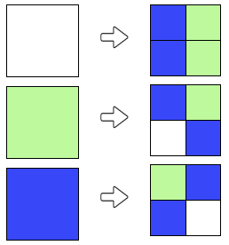
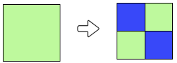
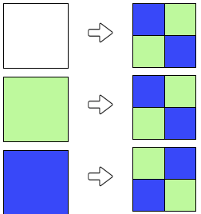

Lösning
Efter den första färgläggningen är de två rutorna på högersidan grönfärgade. För att få målets färgläggning måste regeln för färgläggning av en grön ruta motsvara det upprepade motivet på högra halvan av målet. Vi kan alltså ge följande färgläggningsregel:

Vi får så ena halvan av målet:

På samma sätt kan man definiera färgläggningsregeln för en blå ruta, utgående från det upprepade motivet på vänstra halvan av målet.
Målbilden erhålls alltså enligt följande färgläggningsregler:

I första steget delar man en stor vit ruta i fyra mindre, som vardera färgas grön eller blå. I målbilden ser man att övre vänstra hörnet är identiskt med det nedre högra, liksom det övre högra med det nedre vänstra. Man kan ta hänsyn till denna symmetri genom t.ex. följande färgläggningsregel:

Man får alltså:

Återstår att bestämma reglerna för det andra steget. Färgläggningen för de gröna rutorna ska ge det upprepade mönstret uppe till höger och nere till vänster.

Man får nu:

Färgläggningen för de blå rutorna ska motsvara mönstret uppe till vänster och nere till höger.
Man uppnår alltså målbilden med följande regler:

Notera att man likaväl kan invertera färgerna i första steget, vilket ger följande alternativa regler:

Låt oss titta på målets sexton delkvadrater, med fyra små rutor i varje.

Det finns bara tre olika sorter:

Dessa tre motiv måste alltså var och en svara mot en färgläggningsregel. Man måste bara bestämma vilken som svarar mot vilken färg.
För att se vilken regel som svarar mot vit ruta delar man målbilden i fyra större kvadrater (med 16 små i varje) :

Vi ser att de två övre kvadraterna är identiska, medan de två undre var och en är olika inbördes, och olika de övre.
Härav kan man sluta sig till att färgläggningsregeln för vitt motsvarar den med två identiska övre kvadrater.

När man väl fått detta första steg att utgå från, gäller det att använda de två andra reglerna antingen för blått eller för grönt. Det finns bara två möjligheter, och man kan snabbt prova båda. (Eller försöka tänka ut vilken som måste vara vilken, vilket dock kräver tid och ro, som man inte hade i detta fall..).
Lösningen är:

Det är datavetenskap!